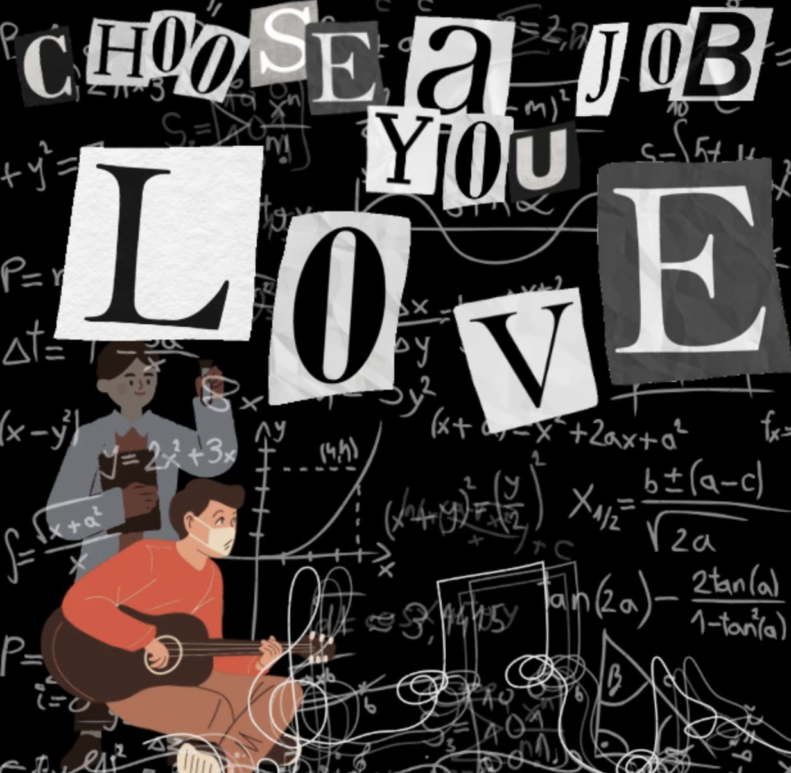

Choose a Job You Love

This project explores the personal relationship between selecting a career as a young adult with interests in the humanities but with talent in STEM-related subjects. By utilizing Canva, a young, colorful guitarist is depicted with his counterpart in the background writing mathematical equations. These equations cover the entire screen, signifying his intent on leaning towards a STEM career. Meanwhile, the young musician symbolizes his love for his music but has dedicated less attention to his craft, due to the small amount of music compared to the vast amount of math depicted all over the design. Overall, I wanted to create a somewhat chaotic design to show the stress that a young adult feels when deciding what to do for the rest of their lives. Another note is that my idea of something I would love to do has become warped over time, so my definition of a job I love has changed and does not necessarily mean picking a hobby for work anymore.